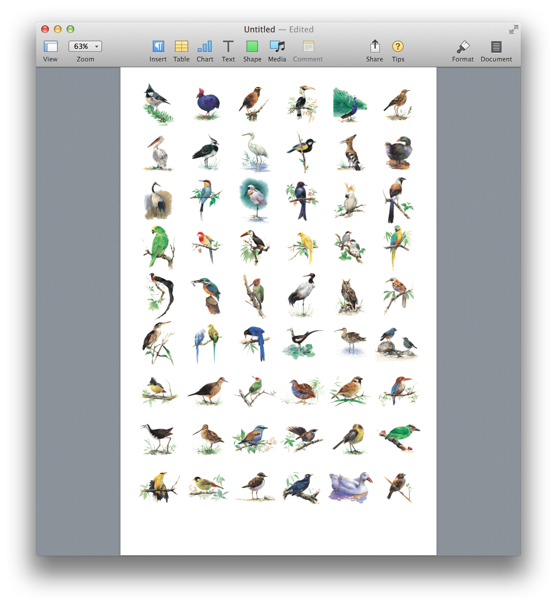

Here’s a script that combines the image editing abilities of AppleScript with Pages page item control, to create a tabloid poster of image thumbnails from a chosen iPhoto album of photos.
(⬇ see below ) A Pages tabloid document containing rows of square thumbnails of photos from a chosen iPhoto album.

Thumbnail Poster of Photos from an iPhoto Album
01
propertytemplateName : "Type Poster Big"
02
propertytemplateWidth : 792
03
propertytemplateHeight : 1224
04
propertydefaultMargin : 36
05
-- for smaller thumbnails, adjust columnCount to higher number
06
propertycolumnCount : 6
07
08
-- derive image dimensions, row count, and image count
For a complete overview of performing standard image editing tasks, such as scale, pad, rotate, and crop, using AppleScript, visit this webpage on this site.
DISCLAIMER
THIS WEBSITE IS NOT HOSTED BY APPLE INC.
Mention of third-party websites and products is for informational purposes only and constitutes neither an endorsement nor a recommendation. MACOSXAUTOMATION.COM assumes no responsibility with regard to the selection, performance or use of information or products found at third-party websites. MACOSXAUTOMATION.COM provides this only as a convenience to our users. MACOSXAUTOMATION.COM has not tested the information found on these sites and makes no representations regarding its accuracy or reliability. There are risks inherent in the use of any information or products found on the Internet, and MACOSXAUTOMATION.COM assumes no responsibility in this regard. Please understand that a third-party site is independent from MACOSXAUTOMATION.COM and that MACOSXAUTOMATION.COM has no control over the content on that website. Please contact the vendor for additional information.